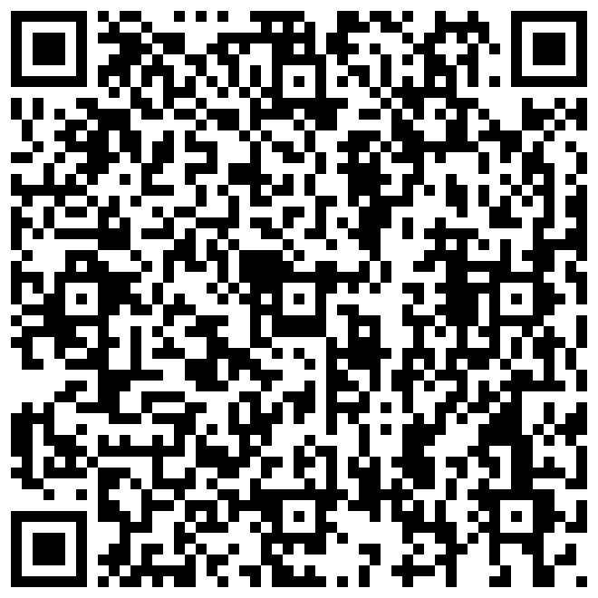
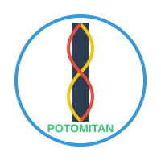
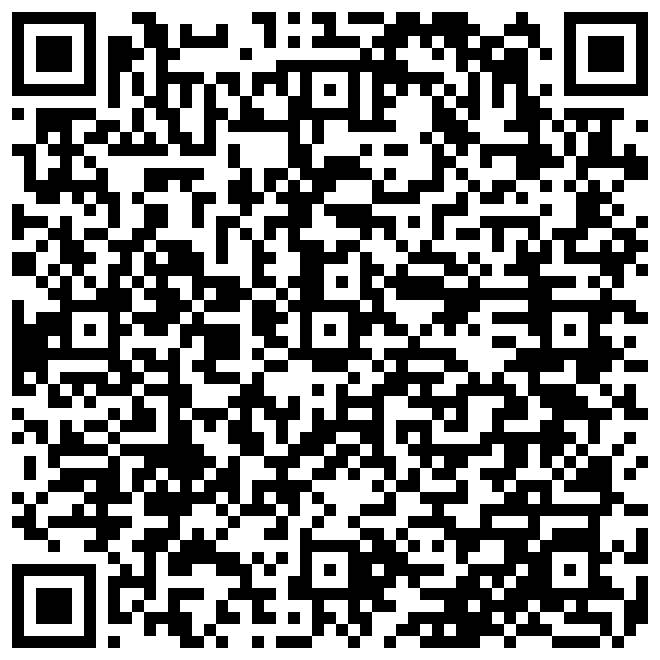
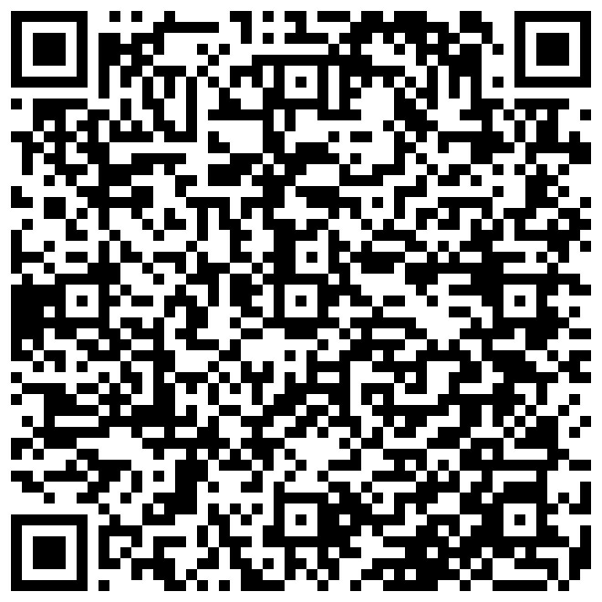
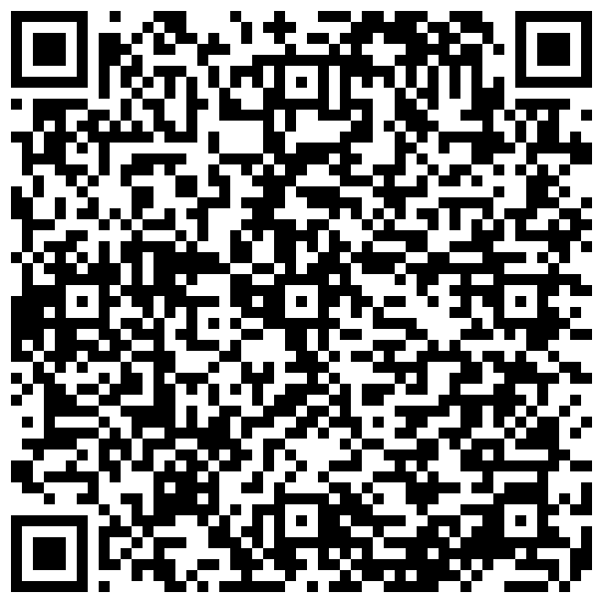

POTOMITAN™
« An kréyòl nou ka palé, an kréyòl nou ka maké ! »
Ce clavier s'appuie sur les textes de Sonny Rupaire, Sylviane Telchid, Max Rippon, Gisèle Pineau et d'autres grands défenseurs du kréyòl guadeloupéen : écrivains, linguistes et artistes qui ont structuré et transmis la langue.

Flashez le code
100 %
gratuit zéro pub
gratuit zéro pub
Comment nous aider
- Notez l'app sur Google Play
- Parlez-en autour de vous
- Signalez un mot manquant
Web potomitan.io
Kontak contact@potomitan.io
Gratuit · Open source (MIT) · Zéro publicité · 100 % hors ligne
Klavyé Kréyòl Karukera est un projet citoyen publié par Potomitan™. Zéro collecte de données personnelles : le clavier fonctionne entièrement sur l'appareil.
Maké on bèl Kréyòl asi téléfòn a-w. · Créé par un Guadeloupéen pour les Guadeloupéens · https://potomitan.io/
Pourquoi
Pourquoi un clavier créole ?
- Votre kréyòl écrit est un peu rouillé.
- Votre téléphone refuse les mots créoles quand vous écrivez en kréyòl.
- Vous hésitez sur l'orthographe à chaque message.
- Ce clavier est fait pour vous.


Et à l'intérieur : jeux de vocabulaire, accents créoles par appui long, progression en 7 niveaux. Retournez le dépliant pour tout découvrir.

Enfin écrire en kréyòl
sans galérer !
Canal 10« Une application intuitive pour écrire en Kréyòl. »
Guadeloupe la 1ère« Klavyé Kréyòl Karukera aide les utilisateurs à écrire leurs messages [en Kréyòl]. »
France-Antilles« Le créole guadeloupéen dispose désormais de son premier clavier intelligent. »


Flashez le codeDisponible sur Google Play100 % gratuit
C'est parti
Installation en 4 étapes
-
Téléchargez l'app, c'est gratuit

Flashez ce codeVisez-le avec l'appareil photo, ou cherchez « Klavyé Kréyòl » sur Google Play - Testez le clavier de démoOuvrez l'app : un clavier d'essai permet de taper « bonjou » et de voir les suggestions, sans rien activer.
-
Activez le clavier dans les réglages
Un bouton dans l'app mène directement au bon écran des paramètres Android.
 Ce message est normalAndroid l'affiche pour tous les claviers, pas seulement celui-ci
Ce message est normalAndroid l'affiche pour tous les claviers, pas seulement celui-ci
- Choisissez-le et écrivezDe retour dans l'app, le sélecteur de clavier s'ouvre : choisissez Klavyé Kréyòl et tapez votre premier mot.

Fonctionnalités
Ce qu'il fait pour vous
- Suggestions bilingues : le kréyòl d'abord, le français prend le relais si besoin
- Accents créoles (é, è, à, ò...) par simple appui long
- Il comprend même en cas d'erreur d'accent ou de lettre
- Jeux de vocabulaire intégrés : mots mêlés, mots mélangés
- Progression en 7 niveaux, comme un jeu, de Pipirit à Potomitan


Le dictionnaire s'enrichit à chaque mise à jour, construit à partir des textes des grands défenseurs du kréyòl.
Motivation
Suivez votre progression
Un tableau de bord suit les mots créoles que vous utilisez et votre progression vers le niveau Potomitan, le sommet des niveaux de maîtrise.
🌍
🌱
🔥
💎
🐇
🐘
👑
PipiritPotomitan


Installez maintenantRejoignez la communauté créolophone100 % gratuit